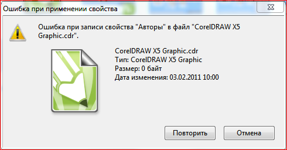

ВОПРОС / ОТВЕТ ДЛЯ НАЧИНАЮЩИХ
polzovatel-902 / 13.07.2010, 09:21/00:41
Форум:
Объясню на примере, чтоб было понятней... Открываю в кореле картинку (футболку с надписью) в формате JPG, мне нужно вытянуть из футболки надпись, т.е разъеденить файл... Говорят нужно формат изменить, еще что-то... Объясните, пожалуйста, что нужно сделать для этого...? Заранее спасибо.
Есть вопрос... Может и ламерский....
Записываю макрос.....
Нужно к НЕСКОЛЬКИМ объектам применить определенную заливку (PS).... А этот гад записывает что применить нужно к АКТИВНОМУ объекту тоесть к последнему выделенному... Как изменить переменную так чтбы применял он заливку ко ВСЕМ выделенным объектам, а не к ТЕКУЩЕМУ
Добавлено (01.02.2011, 21:19)
---------------------------------------------
Версия 13 щас то же самое записал в 15 там все в норме а текст макроса тот же, что язык изменился?
Вот текст макроса
Sub Macro2()
' Recorded 01.02.2011
Dim OrigSelection As ShapeRange
Set OrigSelection = ActiveSelectionRange
ActiveSelection.Fill.ApplyPostscriptFill("Hatching").SetProperties 100, 100, 7, 45, 0
End Sub
Velius, цикл по объектам внутри выделения:
Dim s As ShapeFor Each s In ActiveSelectionRange
s.Fill...
Next
Хм... Черт а нельзя ли в моем коде подправить и все вместе написать, я правда не очень разбираюсь
Добавлено (02.02.2011, 11:41)
---------------------------------------------
А все понял, сделал, ОГРОБНЫЙ БИГ СЕНКС, все работает
Добавлено (02.02.2011, 12:02)
---------------------------------------------
Немного хочу обнаглеть....
Есть и другая задача....
Связанная с предыдущей.
Это я так исправляю файлы импортированные в Corel из Mapinfo Формат для перехода использую WMF никакой другой не идет...
Там использую еще в Mapinfo заливку полупрозрачную на неких объектах чтобы их легко было определить в кореле, WMF формат в корел переносит их как 2-х битовую растровую заливку причем каждая заливка разная (в исходнке например может быть на топокарте выделено болото заливкой которая тоже станет битовой) но они разные
Задача в Кореле выделить прямо из Сгруппированного WMF только НУЖНЫЕ объекты помеченные определенной 2-х битовой заливкой например косые линиии штриховки, а все остальные что там МОГУТ попасться не выделять например заливка болота тоже 2-х битная но крест накрест.... И потом применить мою заливку как в макросе выше....
Если писать макрос с выбором объектов средствами Корела (Выбор объекта, соответствующего выделенному) то все он делает только в макрос зараза не пишет что именно выбрать и что сделать...
Можно сделать выбор Утиляхой что тут на сайте нашел (Jeff's Select Same) Отличная штука.... Но... она не различает ТИП растровой штриховки тоесть гребет все растровые двухбитные штриховки сразу. не видя разницу в них....
Как записать в макросе чтобы он выбрал ВСЕ объекты в соответствии с моими параметрами выбора, причем как и эта тулза "Jeff's Select Same" прямо ВНУТРИ группы не разгруппировывая ее.
Здравствуйте! Как справиться вот с этим при создании нового документа правой кнопкой мыши? Вроде должно быть в настройках, но не нашёл

Смотрите на настройки прав доступа в системе и конкретной папке, проблема скорее всего в них, т.к. файл создает система а не корел.
Разрешил и пользователям и авторам, вообщем всем, а результат тот же
Sancho,
А на мой вопрос... Не поможете?
Velius, я могу написать только то, что нужно учить хотя бы основы ВБА, благо литературы в интернете предостаточно.
Больше нет вариантов??
Может скрины какие сделать? Чтоб нагляднее.
Как справиться вот с этим при создании нового документа правой кнопкой мыши? Вроде должно быть в настройках, но не нашёл
скажите, где в x5 в настройках память, англ версия стоит, не нашла :(
Страницы